Development reference — not for publication. All figures and entities are synthetic demonstration data.
Exhibit pattern gallery
39 editable patterns across 11 analytical families. Browse by the comparison your reader needs to make.
Previews use LibreOffice. Microsoft PowerPoint open / Edit Data / save / reopen remains unverified. native-chart: 14 · native-shapes: 18 · native-chart-with-helper-series: 1 · table: 6. No raster exhibits.
Search patterns
FamilyAll families A. Comparison B. Change between two observations C. Time series D. Composition E. Reconciliation F. Sensitivity G. Relationship H. Distribution and uncertainty I. Time and sequence J. Structure and flow K. Lookup and decision
EditabilityAll tiers native-chart native-shapes native-chart-with-helper-series table Reset filters
Compare (0/2) Clear selection
No patterns match. Try fewer search terms or reset the filters.
A. Comparison
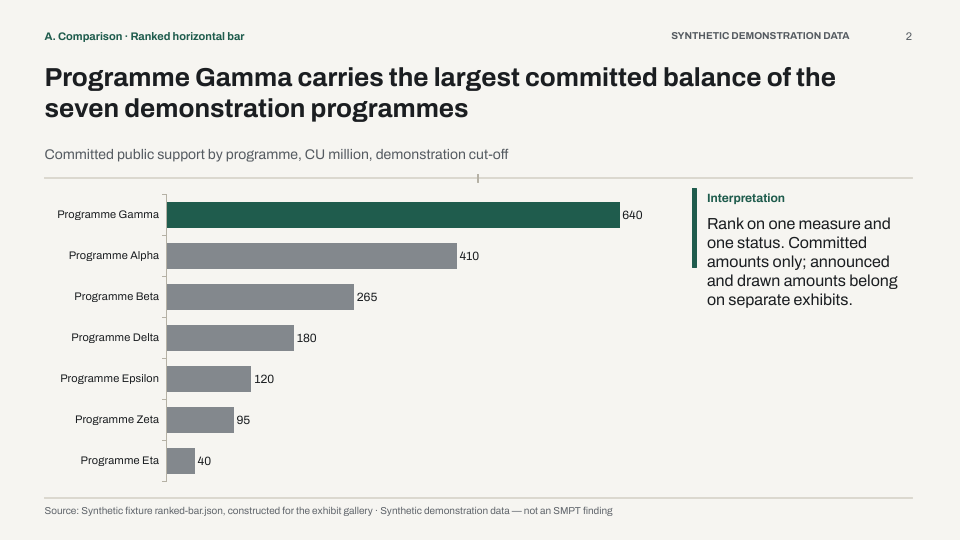
A1 · ranked-bar · gallery slide 2
Ranked horizontal bar
Which entity is largest on one measure, and by how much?
Relationship Magnitude ranking of comparable entities on a single measure and status.
Question types rank
Requires single-measure
Capacity 3–12 bars
Units One unit and status for every bar; zero baseline.
Editability tier native-chart
Use, limits and editability
Use when Every bar shares one unit, one definition and one status (for example committed, not announced) Rank order itself matters to the argument Avoid when Values mix statuses or bases — use status-separated-capital or parallel-basis-panels Fewer than three entities — state the comparison in the title or use a two-value callout Editable Bar values and labels through Edit Data (embedded workbook) Bar colours, gap width, data-label format Frame text: title, subtitle, interpretation, source Positioned, not data-bound Highlight colour is a per-point fill; re-sorting after a data edit is manual Limitations Does not show uncertainty, status mix or change over time
Table alternative: A two-column table (entity, value) when exact figures matter more than rank, or when there are more than twelve entities.
Integrity rules: magnitude-nonnegative min-categories max-categories unique-labels single-highlight
Design references: BCG and SIA (Nov 2022), PDF p16, Exhibit 6: zero-based labelled bars; SMPT original repertoire examples (examples/05-visual-repertoire.svg)
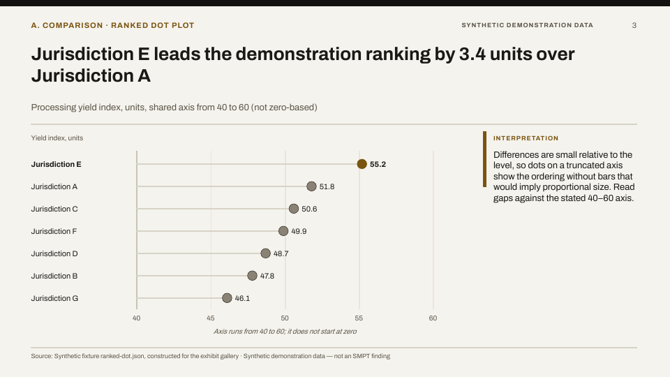
A2 · ranked-dot · gallery slide 3
Ranked dot plot
How do items rank on one measure when the differences are small relative to the level?
Relationship Ordered comparison of single values on a shared axis that may start above zero; position, not length, carries the value.
Question types rank
Requires single-measure
Capacity 4–12 dots
Units One unit and basis throughout; the non-zero axis range is printed on the slide.
Editability tier native-shapes
Use, limits and editability
Use when Bars would exaggerate small differences because every value sits far from zero The reader needs the ordering and approximate gaps, with the axis range stated Avoid when The measure is an additive quantity whose size relative to zero matters — use ranked-bar Items are measured on different bases or in different units Editable Dots, guide lines, gridlines, tick labels and value labels as native shapes and text Accent dot colour Frame text Positioned, not data-bound Dot positions are drawn on a computed scale; values are not data-bound and there is no embedded workbook Editing a value means moving the dot and rewriting its label Limitations The axis does not start at zero, so gaps must not be read as proportions Guide lines run from the axis start and are not bars
Table alternative: A sorted table of item and value, with the measure and basis in the header.
Integrity rules: min-categories max-categories unique-labels bounded-values axis-range single-highlight
Design references: SMPT original repertoire examples (examples/05-visual-repertoire.svg)
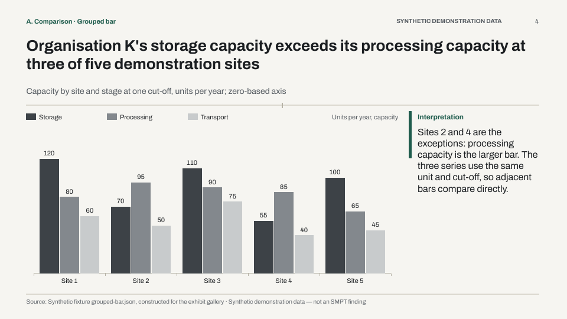
A3 · grouped-bar · gallery slide 4
Grouped bar
How do two or three comparable measures differ within each category?
Relationship Side-by-side magnitudes of 2–3 series within each category on one zero-based axis.
Question types rank
Requires single-measure, several-series
Capacity 2–6 categories (2 or 3 series)
Units One unit throughout; the value axis starts at zero.
Editability tier native-chart
Use, limits and editability
Use when Each category has two or three values in the same unit and at the same cut-off Within-category contrast matters more than a total Avoid when Series are parts of a whole — use a composition form There are more than three series or six categories — use a table or small-multiples Editable Clustered column chart with embedded workbook (Edit Data) Series colours Frame text Positioned, not data-bound Legend chips and the unit caption are native shapes and text, not chart elements Limitations Three series across six categories is the legible limit Series are neutral tones; order in the legend carries identity
Table alternative: A category-by-series table with the unit in the header.
Integrity rules: magnitude-nonnegative min-categories max-categories unique-labels series-count aligned-series
Design references: BCG and SIA (Nov 2022), PDF p16, Exhibit 6: zero-based labelled bars; SMPT original repertoire examples (examples/05-visual-repertoire.svg)
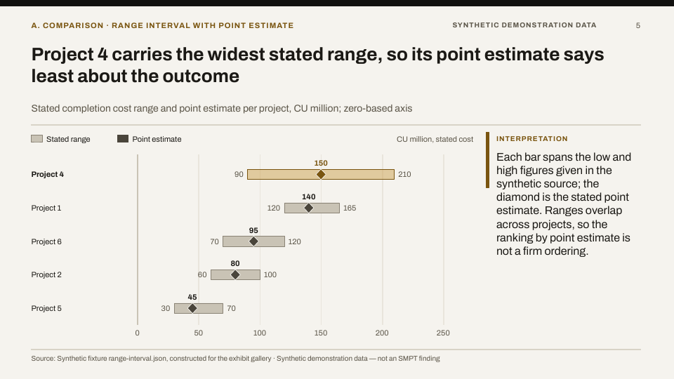
A4 · range-interval · gallery slide 5
Range interval with point estimate
What range does the source state for each item, and where does its point estimate sit?
Relationship Per-item stated low–high range with a point estimate inside it, on one zero-based scale.
Question types uncertainty, rank
Requires single-measure, intervals
Capacity 3–8 ranges
Units One unit throughout; the scale starts at zero.
Editability tier native-shapes
Use, limits and editability
Use when A source states a low, a high and a point value for each item The width of the stated range is part of the finding Avoid when The range is a statistical confidence interval derived from a sample — use a distribution form Only point values exist — use ranked-bar Editable Range bars, point markers and labels as native shapes and text Accent colour Frame text Positioned, not data-bound Range and marker geometry is drawn on a computed scale; values are not data-bound and there is no embedded workbook Editing a figure means resizing the bar, moving the marker and rewriting its labels Limitations The range is whatever the source states; it carries no probability Overlapping ranges do not establish a ranking
Table alternative: A table of item, low, point estimate and high.
Integrity rules: magnitude-nonnegative min-categories max-categories unique-labels interval-ordered bounded-values single-highlight
Design references: SMPT original repertoire examples (examples/05-visual-repertoire.svg)
B. Change between two observations
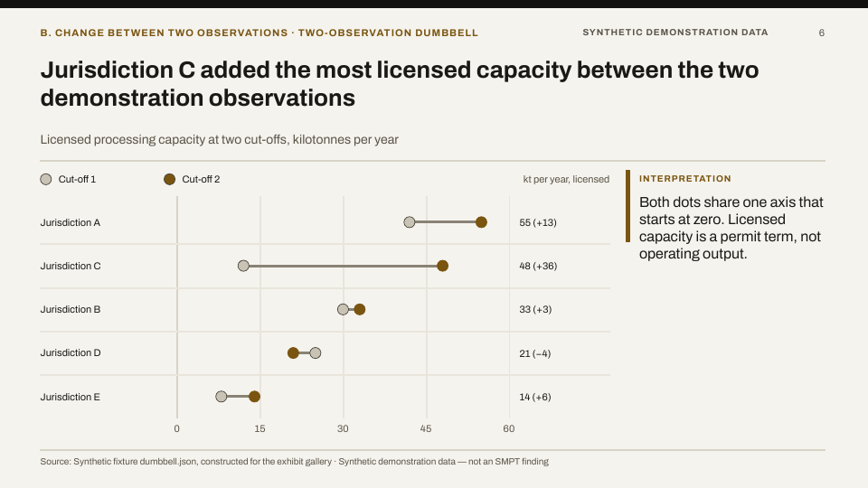
Relationship Paired observations per entity on a shared axis; the gap is the change.
Question types compare-two-observations
Requires two-observations
Capacity 3–10 rows
Units One unit and population for both observations; axis starts at zero.
Editability tier native-shapes
Use, limits and editability
Use when Both observations use the same population, definition and unit The size of each change matters more than the rank Avoid when More than two time points — use annotated-line or small-multiples The second value is a target or forecast — mark it as such or use evidence-milestone-strip Editable Every dot, connector and label is a native shape or text box (move, recolour, retype) Positioned, not data-bound Positions are computed from the fixture; changing a value means moving the shape or re-running the renderer — there is no Edit Data Limitations Endpoints are observations; the connector does not represent the path between them
Table alternative: A three-column table (entity, first, second, change) when exact values are needed.
Integrity rules: magnitude-nonnegative min-categories max-categories unique-labels bounded-values
Design references: McKinsey, year in charts (8 Dec 2025): 2019 vs 2024 export ranking; SMPT original repertoire examples (examples/05-visual-repertoire.svg)
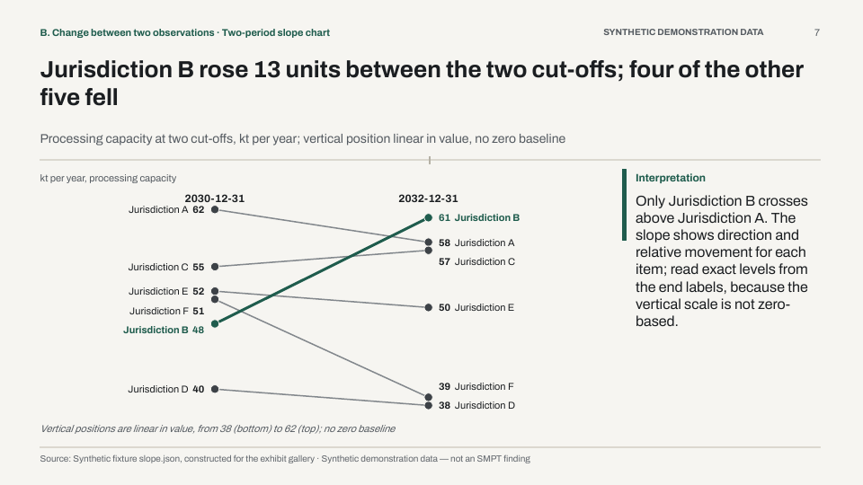
B2 · slope · gallery slide 7
Two-period slope chart
How did each item move between two observations, and did any item change rank?
Relationship Per-item change between two observations of one measure; line slope shows direction and relative movement, crossings show rank changes.
Question types compare-two-observations, rank
Requires single-measure, two-observations
Capacity 3–8 lines
Units One unit and basis at both cut-offs; vertical position is linear in value between the lowest and highest value shown, with no zero baseline, and the slide says so.
Editability tier native-shapes
Use, limits and editability
Use when Each item has a value at exactly two comparable cut-offs Rank changes and direction matter more than exact differences Avoid when More than two observations exist — use annotated-line or small-multiples The reader must compare exact magnitudes or gaps — use dumbbell on a zero-based axis Editable Lines, end dots and labels as native shapes and text Accent line colour and weight Frame text Positioned, not data-bound Line endpoints are drawn on a computed scale; values are not data-bound and there is no embedded workbook End labels are separated vertically by a fixed minimum gap, so a label can sit slightly off its dot Editing a value means moving the line end and rewriting its label Limitations The vertical scale is not zero-based, so slopes compare direction, not proportional change Up to eight lines before end labels crowd
Table alternative: A table of item, first value, second value and change.
Integrity rules: min-categories max-categories unique-labels single-highlight distinct-periods
Design references: McKinsey, year in charts (8 Dec 2025): 2019 vs 2024 export ranking; SMPT original repertoire examples (examples/05-visual-repertoire.svg)
C. Time series
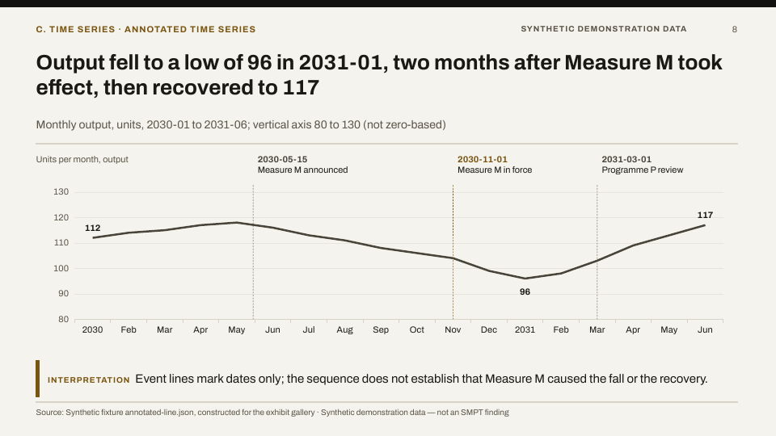
C1 · annotated-line · gallery slide 8
Annotated time series
How did one measure move over time, and where do dated events fall on that path?
Relationship One series over time with 1–3 dated events marked; sequence is shown, causation is not claimed.
Question types trend, sequence
Requires single-measure, time-axis, dated-events
Capacity 8–24 points (1–3 event markers)
Units One unit throughout; the value axis range is explicit and stated in the subtitle when it is not zero-based.
Editability tier native-chart
Use, limits and editability
Use when One measure is observed at regular intervals and a few dated events bear on its reading The reader should see timing of events against the level of the series Avoid when Several series must be compared — use indexed-lines or small-multiples More than three events matter — use a timeline or milestone form Editable Line chart with embedded workbook (Edit Data) Axis range and line colour Frame text Positioned, not data-bound Event hairlines and labels are native shapes positioned from the plot geometry and the event date, not bound to the chart First, last and lowest value labels are positioned text; changing the data requires moving them Positions assume the chart's manual plot layout and explicit axis range are kept Limitations Event lines show timing only and do not establish cause Event dates between observations are interpolated along the category axis
Table alternative: A dated table of observations beside a dated event list.
Integrity rules: min-categories max-categories dates-ascending unique-labels bounded-values event-count axis-range event-in-range single-highlight
Design references: SMPT original repertoire examples (examples/05-visual-repertoire.svg)
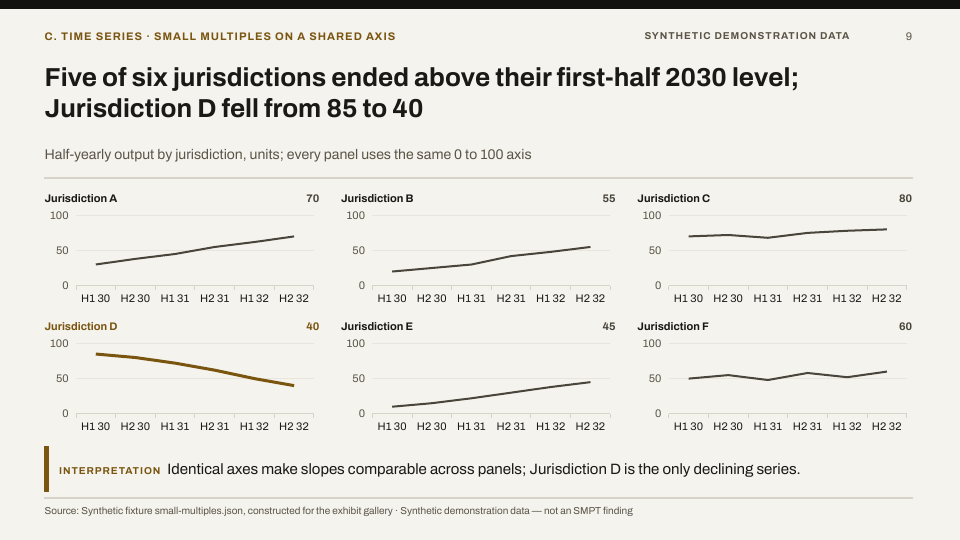
C2 · small-multiples · gallery slide 9
Small multiples on a shared axis
How do several items' paths over time compare when each gets its own panel?
Relationship The same measure over the same periods for 4–6 items, one panel each, on an identical value axis so slopes and levels compare directly.
Question types trend, rank
Requires single-measure, time-axis, several-series
Capacity 4–6 panels
Units One unit throughout; identical axis minimum, maximum and tick step in every panel, stated in the subtitle.
Editability tier native-chart
Use, limits and editability
Use when Overlaid lines would tangle but the reader must still compare shapes and levels All panels share one unit, period set and basis Avoid when Only two or three series exist — use indexed-lines Panels differ in unit or basis, which would force different axes Editable One native line chart per panel, each with an embedded workbook (Edit Data) Panel titles and last-value labels as text Frame text Positioned, not data-bound The shared axis is enforced by the renderer; after editing one panel's axis the others must be matched by hand Panel titles and last-value labels are text boxes, not chart elements Limitations A shared axis can flatten the smallest series Six panels is the legible limit at slide size
Table alternative: A matrix of item by period with the unit in the header.
Integrity rules: min-categories max-categories unique-labels bounded-values aligned-series axis-range single-highlight
Design references: McKinsey, year in charts (8 Dec 2025): five aligned line panels; SMPT original repertoire examples (examples/05-visual-repertoire.svg)
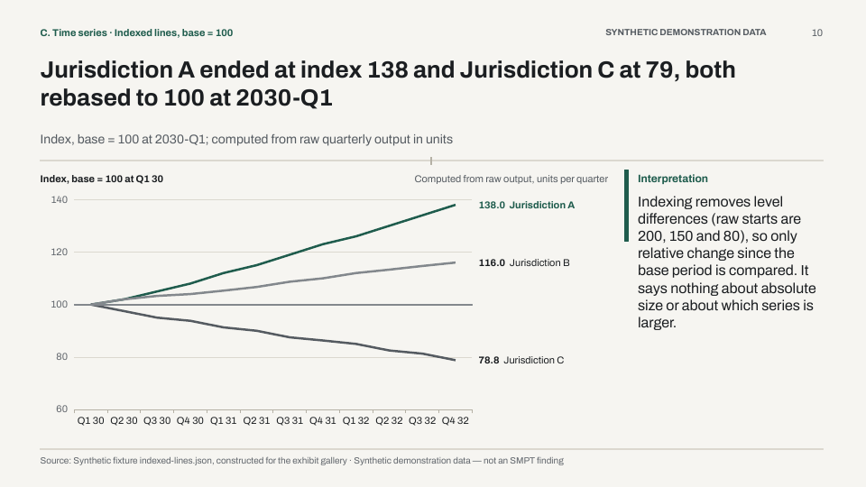
C3 · indexed-lines · gallery slide 10
Indexed lines, base = 100
How have series of different sizes changed relative to a common starting point?
Relationship Each series rebased to 100 at one stated base period, so relative change is comparable and level differences drop out.
Question types trend, compare-two-observations
Requires time-axis, several-series
Capacity 2–4 series (6–24 periods)
Units Index points, base = 100 at the stated period; the base period and the raw unit are printed on the slide.
Editability tier native-chart
Use, limits and editability
Use when Series share a period set but differ greatly in level Relative change since a stated base period is the question Avoid when Absolute levels matter — use small-multiples or annotated-line A series is zero or negative at the base period Editable Line chart with embedded workbook holding the computed index (Edit Data) Series colours Frame text Positioned, not data-bound The workbook holds index values, not the raw values; changing raw data means recomputing the index End labels and the base-100 reference line are positioned shapes and text, not chart elements Limitations The choice of base period changes every line's shape An index conveys relative change only and hides which series is larger
Table alternative: A table of raw values and index values by period for each series.
Integrity rules: min-categories max-categories unique-labels series-count base-period-valid base-positive aligned-series single-highlight
Design references: SMPT original repertoire examples (examples/05-visual-repertoire.svg)
D. Composition
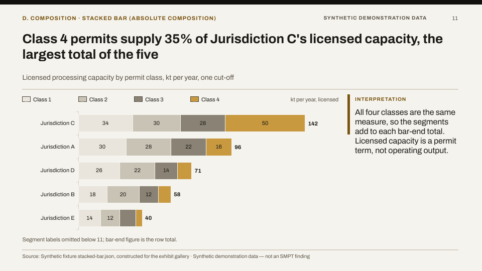
D1 · stacked-bar · gallery slide 11
Stacked bar (absolute composition)
How large is each total, and how is it divided among a few components of the same measure?
Relationship Part-to-whole in absolute units: components of one additive measure add to a stated total per bar.
Question types composition
Requires parts-of-whole, single-measure
Capacity 3–6 bars (up to 4 components each)
Units One additive unit; the axis starts at zero and is hidden, with a bar-end total instead.
Editability tier native-chart
Use, limits and editability
Use when Components are the same measure and genuinely additive The absolute size of each total matters as much as its mix Avoid when Components are unlike instruments or statuses that must not be added — use status-separated-capital Only the mix matters and totals differ widely — use percent-stacked More than four components or six bars — use a table or ranked-bar Editable Stacked bar chart with embedded workbook (Edit Data) Segment colours and number format Legend and frame text Positioned, not data-bound Bar-end totals and the omitted-label note are positioned text computed from the fixture; editing chart data does not update them Segment labels below the threshold are hidden by a number-format condition, not deleted Limitations Only the bottom component shares a baseline, so inner segments are hard to compare across bars Narrow segments are unlabelled and must be read from the table alternative
Table alternative: A table of rows by component with a total column, for exact lookup of every segment.
Integrity rules: min-categories max-categories unique-labels aligned-series magnitude-nonnegative
Design references: SMPT original repertoire examples (examples/05-visual-repertoire.svg)
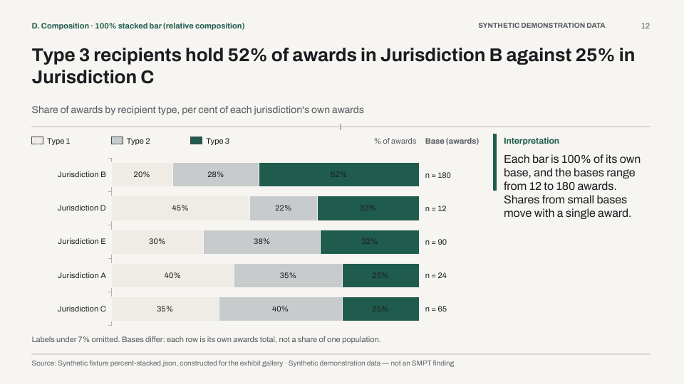
D2 · percent-stacked · gallery slide 12
100% stacked bar (relative composition)
How does the mix of a measure differ across groups, and how large is each group's base?
Relationship Part-to-whole as shares: each row sums to 100% of its own base, shown beside the bar.
Question types composition
Requires parts-of-whole, single-measure
Capacity 3–6 bars (up to 4 components each)
Units Per cent of each row's own base; the axis is fixed at 0–100% and hidden.
Editability tier native-chart
Use, limits and editability
Use when The mix matters more than the absolute total Row bases differ and the reader needs to see by how much Avoid when Absolute size is the point — use stacked-bar Row shares do not sum to 100 and cannot be derived from counts Editable 100% stacked bar chart with embedded workbook (Edit Data) Segment colours and number format Legend and frame text Positioned, not data-bound Row bases (n) and the basis note are positioned text computed from the fixture Labels below 7% are hidden by a number-format condition, not deleted Limitations Shares from small bases are volatile; the base is shown but not a confidence interval Equal bar lengths can read as equal totals
Table alternative: A table of counts and shares per row with the base in its own column.
Integrity rules: min-categories max-categories unique-labels aligned-series magnitude-nonnegative sums-to-total base-stated
Design references: SMPT original repertoire examples (examples/05-visual-repertoire.svg)
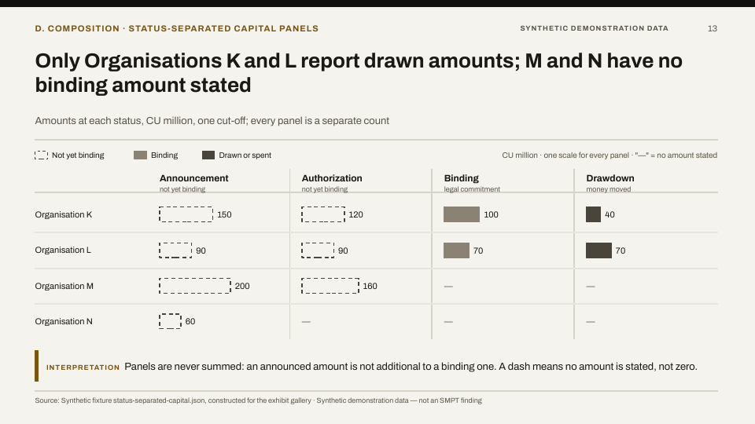
D3 · status-separated-capital · gallery slide 13
Status-separated capital panels
How much money sits at each transaction status, and how much of it has actually become binding or moved?
Relationship Amounts split by status in separate panels on one unit; a status is never added to another.
Question types composition, state
Requires status-stages, single-measure
Capacity 2–5 rows (3 to 5 status panels)
Units One currency and unit; the scale is shared across panels and starts at zero. Nothing is added across panels.
Editability tier native-shapes
Use, limits and editability
Use when Announced, authorized, binding and drawn amounts are all stated and must not be conflated The reader needs to see where an amount stops progressing through the status taxonomy Avoid when Statuses are not in the SMPT taxonomy Amounts are in different currencies or on different bases — use parallel-basis-panels A single total is requested — this pattern refuses to show one Editable Bar shapes, labels, dashes and fills Panel titles and legend Frame text Positioned, not data-bound Bar lengths are drawn on a computed scale; values are not data-bound and no workbook is embedded Hollow dashed outlines mark statuses before binding Limitations A later status is not a subset of an earlier one unless the source says so, so bars are not read as conversion rates Only taxonomy statuses are drawn; stages beyond expenditure need a different exhibit
Table alternative: A table of rows by status with blank cells for amounts not stated.
Integrity rules: controlled-vocabulary min-categories max-categories unique-labels aligned-series magnitude-nonnegative status-order no-cross-status-total
Design references: SMPT original repertoire examples (examples/05-visual-repertoire.svg)
E. Reconciliation
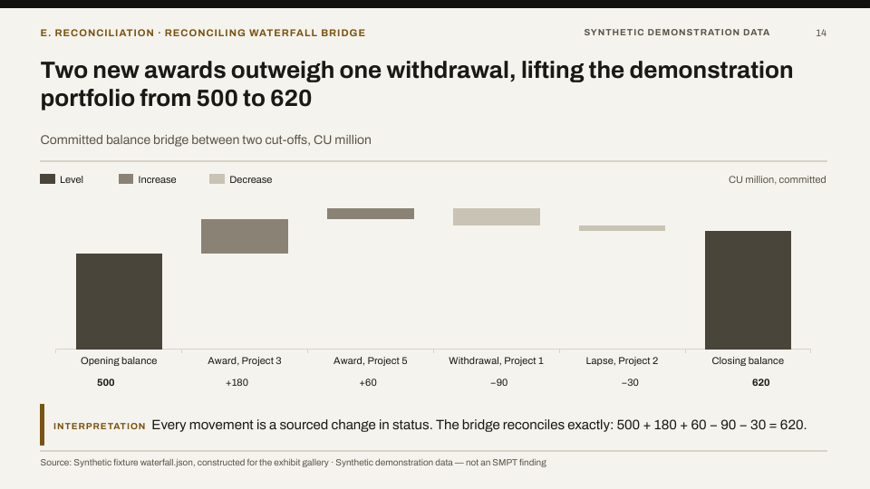
E1 · waterfall · gallery slide 14
Reconciling waterfall bridge
How did an opening balance become the closing balance, and which movements drove it?
Relationship Additive reconciliation: opening + Σ movements = closing, on one consistent basis.
Question types reconcile
Requires additive-movements, single-measure
Capacity 2–8 movements
Units One unit throughout; bars keep true geometry (no inflated small movements).
Editability tier native-chart-with-helper-series
Use, limits and editability
Use when Opening and closing balances share a basis and every movement is stated The size and sign of each driver matters Avoid when Movements do not reconcile or are on different bases — use parallel-basis-panels Movements are scenario sensitivities rather than additive changes — use tornado Editable Stacked bar chart with embedded workbook (Edit Data) Increase, decrease and total colours Frame text Positioned, not data-bound The unfilled 'helper' series holds each float; editing a movement requires recomputing the helper column Connector hairlines between bars are native shapes positioned from the fixture Limitations Running balances must stay non-negative for the helper-series geometry Movements are read in sequence; the order is a presentation choice, not causation
Table alternative: A reconciliation table (line item, movement, running balance) for audit-grade lookup.
Integrity rules: bridge-reconciles bridge-levels-nonnegative max-categories unique-labels
Design references: Bain, Global Private Equity Report 2025, PDF p44, Figure 2: value-creation bridge; SMPT original repertoire examples (examples/05-visual-repertoire.svg)
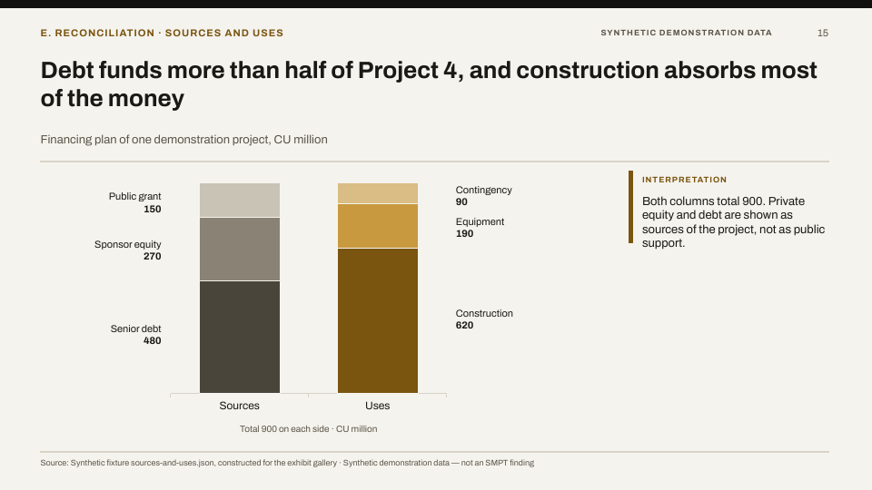
E2 · sources-and-uses · gallery slide 15
Sources and uses
Where does a financing package come from, and what does it pay for?
Relationship Two stacked columns that reconcile: Σ sources = Σ uses.
Question types reconcile, composition
Requires parts-of-whole
Capacity 2–8 components (≤4 per side)
Units One currency and time basis for both sides.
Editability tier native-chart
Use, limits and editability
Use when A single package has stated sources and stated uses that total the same amount The split between public, private and debt sources matters Avoid when Sources and uses do not reconcile — show the gap explicitly or use parallel-basis-panels Components mix committed and conditional capital — use status-separated-capital Editable Stacked column chart with embedded workbook (Edit Data) Component labels are native text boxes Frame text Positioned, not data-bound Side labels and totals are text boxes positioned from the fixture; update them if values change Limitations Does not show timing or conditions of each source
Table alternative: A two-block table (sources with amounts, uses with amounts, matching totals).
Integrity rules: magnitude-nonnegative totals-match max-categories unique-labels
Design references: Bain, Global Private Equity Report 2025, PDF p44, Figure 2: value-creation bridge; SMPT original repertoire examples (examples/05-visual-repertoire.svg)
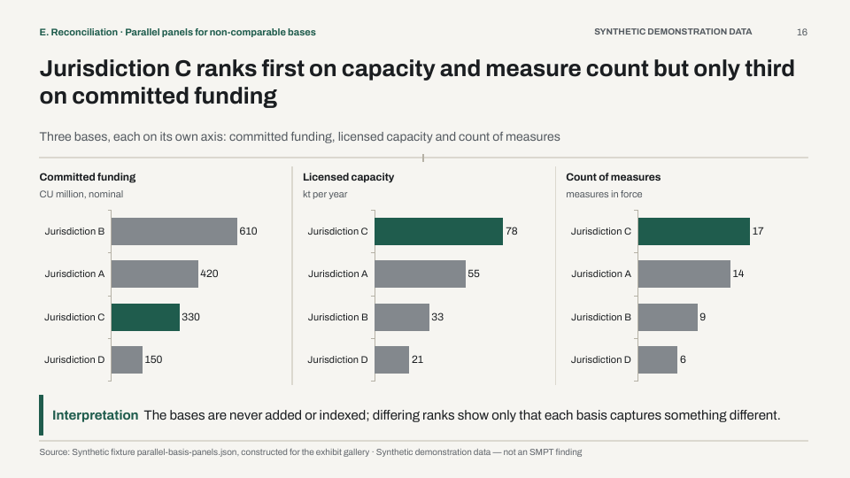
E3 · parallel-basis-panels · gallery slide 16
Parallel panels for non-comparable bases
How do the same subjects compare on bases that cannot share an axis or a total?
Relationship Side-by-side comparison across independent bases; each panel has its own zero-based axis and unit.
Question types rank, compare-two-observations
Requires non-comparable-bases
Capacity 3–6 bars per panel (2 or 3 panels)
Units Each panel has its own unit and zero-based axis; no value is compared across panels.
Editability tier native-chart
Use, limits and editability
Use when Funding, capacity and counts describe the same subjects but cannot be added or indexed together The reader should see that rankings differ by basis Avoid when Two panels carry the same basis — they are one chart A combined score or total is wanted; this pattern refuses to imply one Editable One bar chart per panel with embedded workbook (Edit Data) Bar colours and number formats Panel headings and frame text Positioned, not data-bound Panel headings, unit lines and separator rules are text and shapes drawn from the fixture Limitations Bar lengths are not comparable between panels and a shared bar scale would mislead Differing ranks do not explain why the bases differ
Table alternative: A matrix of subjects by basis with the unit in each column heading.
Integrity rules: min-categories max-categories unique-labels distinct-bases magnitude-nonnegative single-highlight
Design references: Strategy&, Every Molecule (2018), p14, Exhibit 6: option comparisons; SMPT original repertoire examples (examples/05-visual-repertoire.svg)
F. Sensitivity
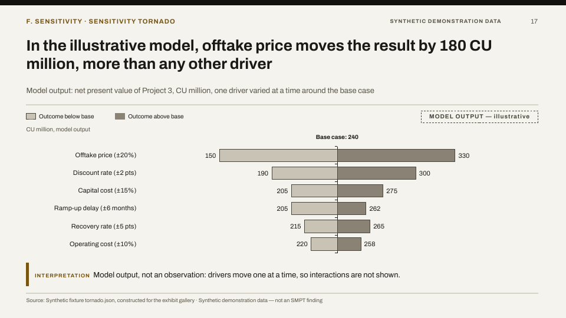
F1 · tornado · gallery slide 17
Sensitivity tornado
Which input assumptions move a model output most, and by how much either way?
Relationship One-at-a-time sensitivity: for each driver, the model's lowest and highest outcome around a base case, sorted by swing.
Question types sensitivity
Requires model-output, single-measure, intervals
Capacity 3–8 drivers
Units One output unit; bars are deviations from the base case, centred on it, with outcome values at the ends.
Editability tier native-chart
Use, limits and editability
Use when A model output exists with a stated base case and a low and high outcome for each driver The reader needs the ranking of drivers by influence, labelled as model output Avoid when The figures are observed data rather than model output Drivers interact strongly — one-at-a-time bars would mislead; show a sensitivity-grid for two drivers Nothing in the record states the model's assumptions Editable Stacked bar chart of deviations from base with embedded workbook (Edit Data) Bar colours Frame text Positioned, not data-bound Chart series hold outcome minus base, not the outcomes themselves Outcome values at bar ends, the base-case label and the model-output tag are positioned text and shapes computed from the fixture Limitations One-at-a-time variation hides interactions between drivers Bar length depends on the tested ranges chosen, which are assumptions
Table alternative: A table of drivers with tested range, low outcome, high outcome and swing.
Integrity rules: interval-ordered min-categories max-categories unique-labels
Design references: SMPT original repertoire examples (examples/05-visual-repertoire.svg)
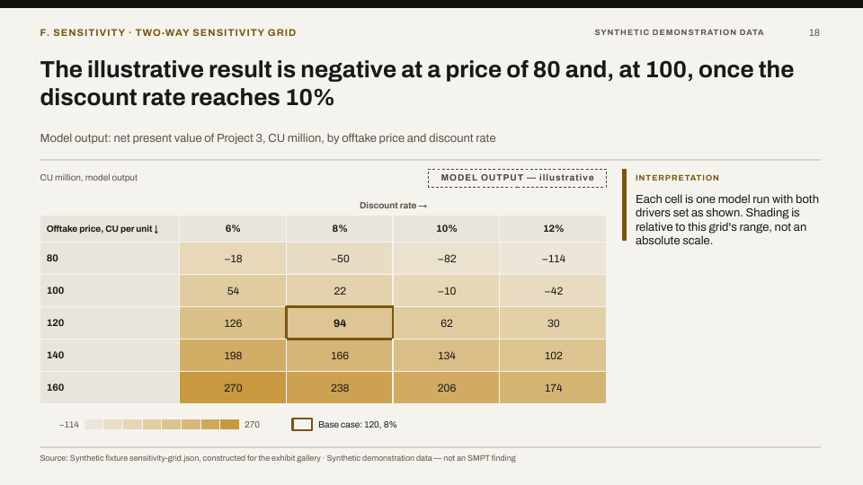
F2 · sensitivity-grid · gallery slide 18
Two-way sensitivity grid
How does a model output change when two drivers vary together, and where does it change sign or magnitude?
Relationship Two-way sensitivity: one model run per cell of a driver-A by driver-B grid, with the base case marked.
Question types sensitivity
Requires model-output, single-measure, conditions
Capacity 3–7 values per driver (3 to 7 rows by 3 to 7 columns)
Units One output unit; shading is a relative ramp over the grid's own minimum and maximum, not an absolute scale.
Editability tier table
Use, limits and editability
Use when Two drivers jointly determine a model output and exact cell values matter The base case must remain visible inside the range of alternatives Avoid when More than two drivers need comparison — use tornado Values are observed rather than model output A continuous surface is claimed; the grid shows discrete runs only Editable Native PowerPoint table: values, fills, borders and fonts Frame text Positioned, not data-bound Cell shading is a static fill computed from the fixture; editing a value does not recolour it The sequential key, base-case marker and model-output tag are positioned shapes and text Limitations Shading is relative to the grid's range, so two grids are not comparable by colour Shows two drivers only; others are held at base values
Table alternative: The grid is itself a table; a plain unshaded copy serves screen-reader and export use.
Integrity rules: min-categories max-categories unique-labels aligned-series base-in-grid
Design references: SMPT original repertoire examples (examples/05-visual-repertoire.svg)
G. Relationship
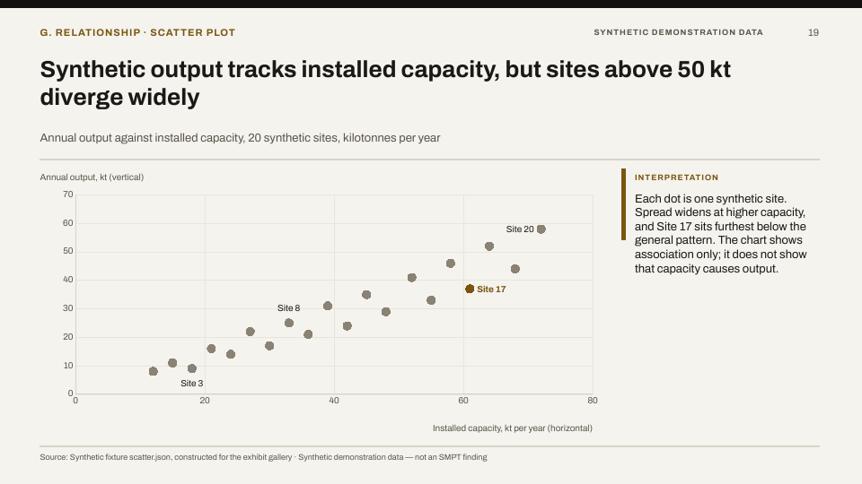
G1 · scatter · gallery slide 19
Scatter plot
Do two continuous measures move together across the items, and which items depart from the pattern?
Relationship Association between two continuous measures observed on the same items; no causal direction implied.
Question types relationship
Requires two-measures
Capacity 6–30 points
Units Each axis states its own unit; axes are independent and not zero-based by rule, so ranges are declared explicitly.
Editability tier native-chart
Use, limits and editability
Use when Each item has two continuous measures on stated units The shape of the cloud and the position of a few named items matter more than exact values Avoid when A third measure must be shown as size — use bubble A decision threshold divides the items into groups — use threshold-scatter The x measure is time — use a line chart Editable Native scatter chart with embedded workbook (Edit Data) Marker colours and axis ranges Frame text Positioned, not data-bound Point labels are positioned text boxes computed from the fixture, not bound to the chart; they do not move if data is edited Axis titles are text boxes Limitations Correlation is not causation; the exhibit shows association only Labels for named points are positioned, so they need re-placing after a data edit Dense overlap beyond about 30 points hides items
Table alternative: A two-column table (item, x, y) for exact lookup.
Integrity rules: min-categories max-categories unique-labels axis-explicit bounded-values labelled-points-limit single-accent
Design references: SMPT original repertoire examples (examples/05-visual-repertoire.svg)
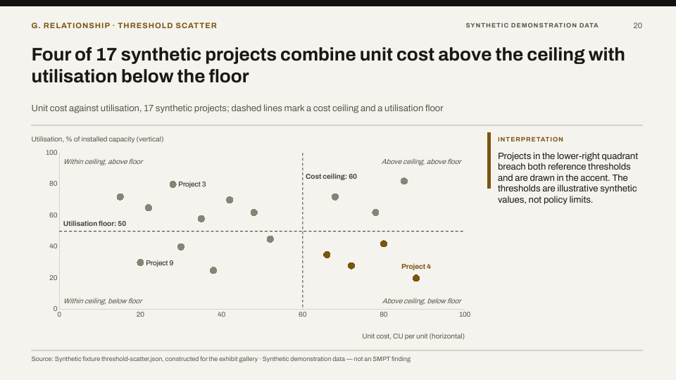
G2 · threshold-scatter · gallery slide 20
Threshold scatter
Which items fall beyond a stated reference value on one or both measures?
Relationship Association between two measures read against one or two stated reference thresholds that divide the plane into quadrants.
Question types relationship, state
Requires two-measures, conditions
Capacity 6–30 points
Units Each axis states its own unit; thresholds are expressed in the unit of their axis.
Editability tier native-chart
Use, limits and editability
Use when A source or analyst states a threshold on at least one measure and the reader needs to see who is beyond it Quadrant membership is the message and exact values are secondary Avoid when No stated threshold exists; drawing one invents a criterion — use scatter A third measure must also be encoded — use bubble Editable Native scatter chart with embedded workbook (Edit Data) Marker colours and axis ranges Frame text Positioned, not data-bound Threshold lines, quadrant captions and point labels are positioned shapes and text computed from the fixture; they do not move if chart data or axis range is edited The accent/neutral split is two series computed from the thresholds at build time Limitations Thresholds must be stated or sourced; an analyst-chosen cut-off is a presentation choice and is labelled as such Items near a threshold look categorically different from items just across it Correlation is not causation
Table alternative: A table of items with a flag column stating which thresholds each item breaches.
Integrity rules: min-categories max-categories unique-labels axis-explicit bounded-values threshold-present threshold-within-axis labelled-points-limit
Design references: SMPT original repertoire examples (examples/05-visual-repertoire.svg)
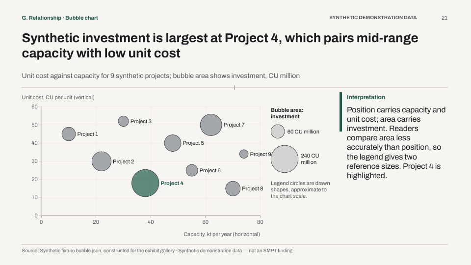
G3 · bubble · gallery slide 21
Bubble chart
How do two measures relate across items, and which items carry the most of a third measure?
Relationship Association between two measures with a third, strictly positive magnitude encoded as bubble area.
Question types relationship, rank
Requires two-measures, third-measure
Capacity 3–12 bubbles
Units Three independent units: x, y and the size measure, each stated on the slide.
Editability tier native-chart
Use, limits and editability
Use when A third positive magnitude adds context to a two-measure relationship Few enough items that each bubble can be named Avoid when The size values must be compared precisely — use a ranked bar or a table Only two measures exist — use scatter Sizes can be zero or negative Editable Native bubble chart with embedded workbook (Edit Data) Bubble colours, transparency and axis ranges Frame text Positioned, not data-bound Bubble labels and axis titles are positioned text computed from the fixture Size-legend reference circles are drawn shapes scaled to PowerPoint's default bubble size (largest bubble = 25% of the shorter plot side); the renderer may differ, so they are approximate Limitations Area perception is weak; readers misjudge ratios between bubbles, so exact sizes belong in a table or legend Large bubbles can hide neighbours, which caps the item count Correlation is not causation
Table alternative: A table of items with x, y and size columns for exact comparison.
Integrity rules: min-categories max-categories unique-labels axis-explicit bounded-values sizes-positive size-legend-two single-accent
Design references: SMPT original repertoire examples (examples/05-visual-repertoire.svg)
H. Distribution and uncertainty
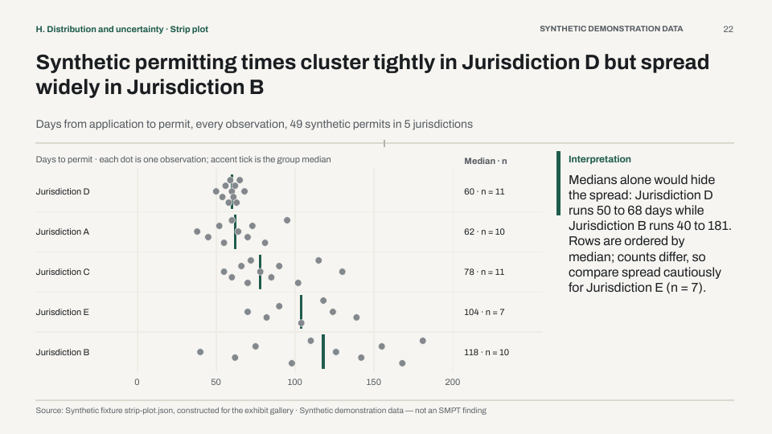
H1 · strip-plot · gallery slide 22
Strip plot
How are individual observations spread within each group, and where does each group's centre sit?
Relationship Distribution of every observation per group on one shared axis, with a group median for orientation.
Question types distribution, uncertainty
Requires sample, single-measure
Capacity 2–8 groups
Units One unit and one shared axis across all rows.
Editability tier native-shapes
Use, limits and editability
Use when Each group has a modest number of observations that can all be shown Spread, clusters and outliers matter as much as the centre Avoid when Groups have hundreds of observations — use histogram or box-interval Only a summary range is available — use box-interval or range-interval Editable Dots, median ticks, gridlines and labels are native shapes and text Colours and positions Positioned, not data-bound Dot positions are computed from the fixture and are not data-bound; there is no embedded workbook, so editing a value means moving its dot and relabelling the median Vertical jitter is a deterministic function of rank, not a data value Limitations Vertical jitter has no meaning; only horizontal position is data Medians from very small n are unstable and n is therefore printed on every row Sample composition is not shown; unequal groups need caution
Table alternative: A table of group, n, median, minimum and maximum, with the raw observations in an appendix.
Integrity rules: min-categories max-categories unique-labels bounded-values axis-explicit min-observations max-observations
Design references: SMPT original repertoire examples (examples/05-visual-repertoire.svg)
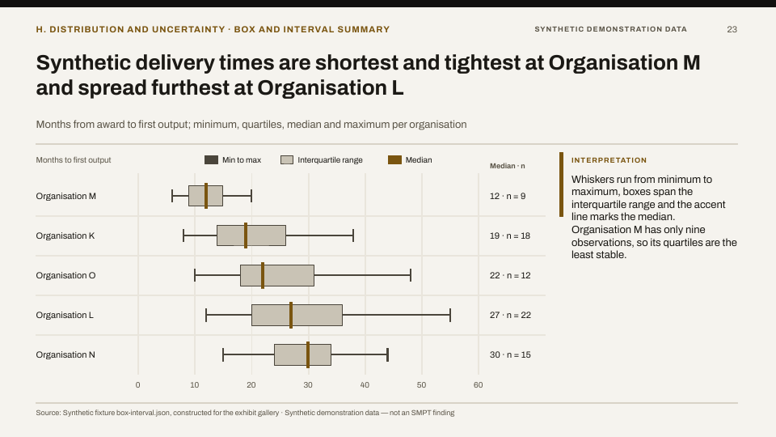
H2 · box-interval · gallery slide 23
Box and interval summary
How do the centre, middle half and full range of a measure compare across groups?
Relationship Five-number summary per group on one shared axis: minimum, first quartile, median, third quartile, maximum.
Question types distribution, uncertainty
Requires sample, intervals, single-measure
Capacity 2–8 groups
Units One unit and one shared axis across all rows.
Editability tier native-shapes
Use, limits and editability
Use when A source reports five-number summaries rather than raw observations Groups have enough observations (at least 5) for quartiles to mean something Avoid when Raw observations are few and available — use strip-plot The shape of one distribution matters — use histogram The audience is unlikely to read quartiles Editable Whiskers, boxes, median lines, gridlines and labels are native shapes and text Colours and positions Positioned, not data-bound All five numbers per group are positioned from the fixture and are not data-bound; there is no embedded workbook, so editing a value means resizing the shapes and relabelling Limitations Quartiles from small n are unstable; n is printed on every row Boxes hide multimodality and cannot show individual outliers Whiskers here are the stated minimum and maximum, not a statistical fence
Table alternative: A table of group, n, minimum, Q1, median, Q3 and maximum.
Integrity rules: min-categories max-categories unique-labels axis-explicit interval-ordered bounded-values min-observations
Design references: SMPT original repertoire examples (examples/05-visual-repertoire.svg)
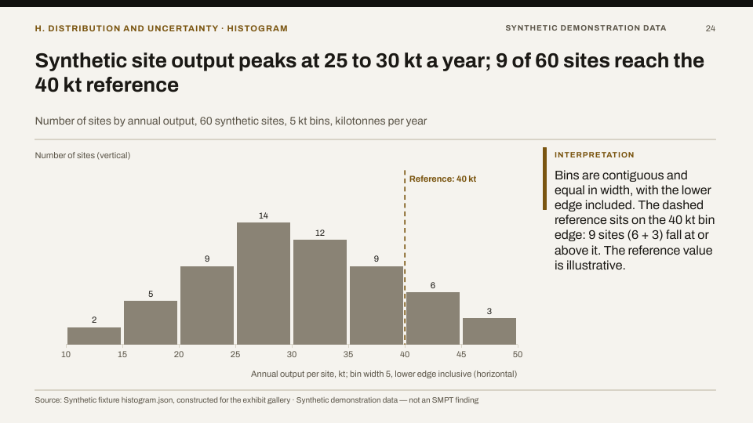
H3 · histogram · gallery slide 24
Histogram
How is one measure distributed across many items, and where does a reference value fall in it?
Relationship Frequency of one continuous measure in contiguous, equal-width bins.
Question types distribution
Requires sample, single-measure
Capacity 5–16 bins
Units x axis in the measure's unit with one stated bin width; y axis is a count starting at zero.
Editability tier native-chart
Use, limits and editability
Use when One measure is observed on many items and the overall shape matters A reference value is to be located within the distribution Avoid when Groups are to be compared — use box-interval or strip-plot Items must be identified individually — use ranked-dot or ranked-bar Fewer than about 30 observations, where bin shape is unstable Editable Native column chart with embedded workbook (Edit Data) for the counts Column colour, gap and value labels Frame text Positioned, not data-bound Bin-edge labels, axis titles and the reference line are positioned from the fixture and do not move if bins are edited Category names in the workbook are bin ranges; the visible edge labels are separate text boxes Limitations Bin width and edge convention change the visual shape; both are stated Equal-width bins only, so column height equals frequency Reference line is positioned and does not follow data edits
Table alternative: A frequency table of bin ranges and counts.
Integrity rules: bins-contiguous min-categories max-categories counts-nonnegative counts-whole bins-equal-width threshold-within-axis
Design references: SMPT original repertoire examples (examples/05-visual-repertoire.svg)
I. Time and sequence
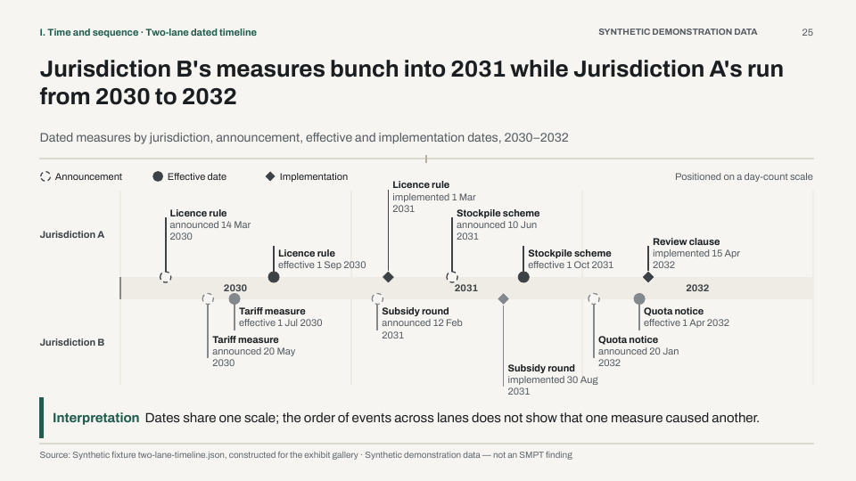
I1 · two-lane-timeline · gallery slide 25
Two-lane dated timeline
In what order did two jurisdictions announce, enact and implement their measures?
Relationship Dated events from two parallel tracks placed on one date axis; marker style separates announcement, effective and implementation dates.
Question types sequence
Requires dated-events, parallel-tracks, time-axis
Capacity 4–14 dated events across both lanes
Units Calendar dates on a linear day-count scale spanning whole calendar years.
Editability tier native-shapes
Use, limits and editability
Use when Two jurisdictions' measures need to be read against the same calendar The gap between announcement, effective and implementation dates matters Avoid when More than two tracks must be compared — use swimlane Events carry different evidence states rather than date types — use evidence-milestone-strip Editable Markers, stems, axis band and labels as native shapes and text boxes Lane and event wording Colours and marker styles Positioned, not data-bound Dates are positioned from the fixture at build time; moving an event requires dragging its marker, stem and label together There is no embedded workbook Limitations Shared dates do not imply causation or response between lanes Label stagger is limited to three levels per lane; dense clusters need the swimlane or a table
Table alternative: A dated event table with lane, measure, date type and date.
Integrity rules: dates-ascending unique-labels min-categories max-categories lane-count label-length label-stagger
Design references: SMPT original repertoire examples (examples/05-visual-repertoire.svg)
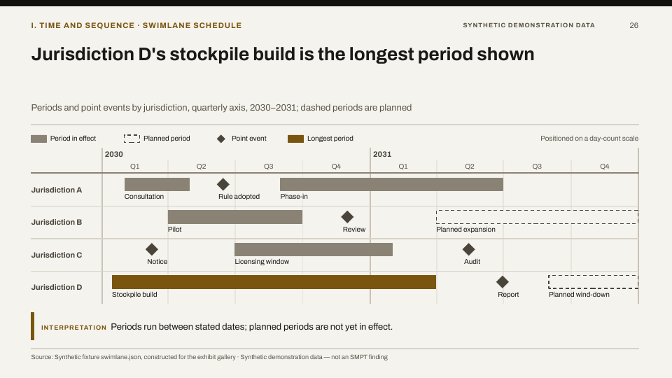
I2 · swimlane · gallery slide 26
Swimlane schedule
When does each actor's or instrument's activity run, and where do periods and point events fall against the calendar?
Relationship Dated periods and point events grouped by lane on one quarterly date axis; planned periods are hollow and dashed.
Question types sequence
Requires dated-events, parallel-tracks, intervals, time-axis
Capacity 3–6 lanes
Units Calendar dates on a linear day-count scale snapped to whole quarters; quarter gridlines.
Editability tier native-shapes
Use, limits and editability
Use when Three to six actors or instruments each have periods and point events to place on one calendar Overlap between lanes matters more than exact event counts Avoid when Only two tracks are compared — use two-lane-timeline The question is elapsed time between two stages per item — use duration-bars Editable Bars, diamonds, gridlines, headers and labels as native shapes and text boxes Colours, dash styles and wording Positioned, not data-bound Dates are positioned from the fixture at build time; resizing a bar does not update any data There is no embedded workbook Limitations Periods within a lane may not overlap and labels sit below the marks, so dense lanes need splitting Overlap in time between lanes does not show interaction or causation
Table alternative: A schedule table (lane, item, type, start, end) for exact dates.
Integrity rules: min-categories max-categories unique-labels single-highlight interval-ordered label-length lane-overlap label-overlap
Design references: SMPT original repertoire examples (examples/05-visual-repertoire.svg)
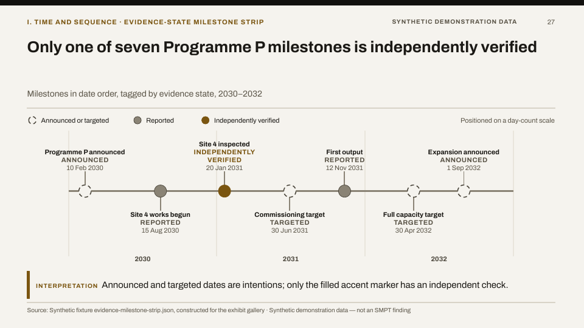
I3 · evidence-milestone-strip · gallery slide 27
Evidence-state milestone strip
Which milestones have actually been evidenced, and which remain announced or targeted?
Relationship One dated sequence of milestones; marker style encodes each milestone's evidence state (announced, targeted, reported, independently verified).
Question types sequence, state
Requires dated-events, states, time-axis
Capacity 4–8 milestones
Units Calendar dates on a linear day-count scale spanning whole calendar years.
Editability tier native-shapes
Use, limits and editability
Use when A single project or programme has milestones whose evidence quality differs A reader should not mistake a target or announcement for an observed outcome Avoid when Stages of a formal process are the point — use stage-ladder Several actors have parallel schedules — use swimlane Editable Markers, stems, spine and labels as native shapes and text boxes Milestone wording and state text Marker colours and dash styles Positioned, not data-bound Dates are positioned from the fixture at build time; changing a state means restyling its marker by hand There is no embedded workbook Limitations The accent marks at most one independently verified milestone; more would break the single-highlight rule Evidence state describes the milestone's support, not its importance or whether the target was met
Table alternative: A milestone table (date, milestone, evidence state, source) for audit-grade lookup.
Integrity rules: min-categories max-categories controlled-vocabulary dates-ascending unique-labels label-length single-highlight label-overlap
Design references: SMPT original repertoire examples (examples/05-visual-repertoire.svg)
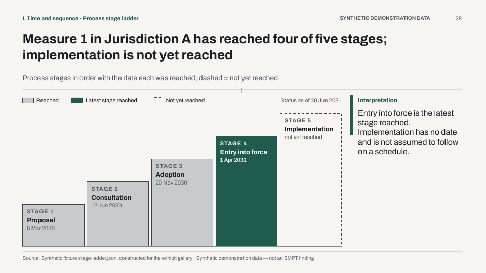
I4 · stage-ladder · gallery slide 28
Process stage ladder
How far has a measure progressed through its ordered process, and when was each stage reached?
Relationship Ordered stages of one process as rising steps; each shows the date reached or is hollow and dashed when not yet reached.
Question types sequence, state
Requires status-stages, dated-events, states
Capacity 4–6 process stages
Units Ordinal stages; dates are labels, not positions.
Editability tier native-shapes
Use, limits and editability
Use when A single measure moves through a fixed order of stages (proposal, consultation, adoption, entry into force, implementation) The reader needs to see which stages have and have not been reached Avoid when Stages can be reached out of order or skipped — use evidence-milestone-strip or a table Several measures are compared — use duration-bars or a status matrix Editable Steps and text as native shapes and text boxes Stage names, dates and fills Positioned, not data-bound Step heights encode order only, not elapsed time; they are positioned from the fixture at build time and are not data-bound There is no embedded workbook Limitations Equal step widths do not represent elapsed time between stages; use duration-bars for that A stage without a date is treated as not reached, never as skipped
Table alternative: A stage table (stage, status, date reached) for exact dates and sources.
Integrity rules: min-categories max-categories unique-labels dates-ascending label-length reached-after-as-of stage-order
Design references: SMPT original repertoire examples (examples/05-visual-repertoire.svg)
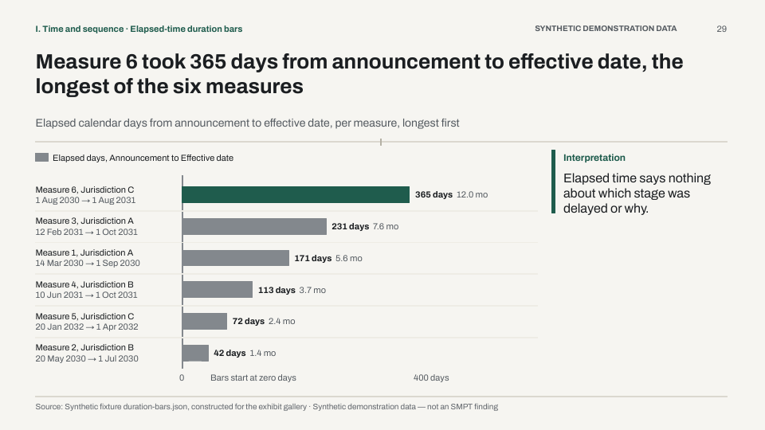
I5 · duration-bars · gallery slide 29
Elapsed-time duration bars
How long did each item take to get from one dated stage to the next?
Relationship Elapsed days between the same two dated stages for each item, as zero-based bars sorted by duration.
Question types sequence, compare-two-observations
Requires durations, dated-events, single-measure
Capacity 3–10 items
Units Calendar days between the two stages; months shown as days ÷ 30.4375 for reading only.
Editability tier native-shapes
Use, limits and editability
Use when Every item has the same two dated stages, such as announcement and effective date The lag between stages matters more than the calendar position Avoid when Calendar position and overlap matter — use swimlane Items have different stage pairs — the bars would not share a basis; use a table Editable Bars, baseline, gridline and labels as native shapes and text boxes Item names, dates and colours Positioned, not data-bound Bar lengths are computed from the fixture at build time; editing a date does not resize its bar There is no embedded workbook Limitations Elapsed time does not show which stage was delayed, or whether a delay was intended Bars share one zero-based axis only if every item measures the same pair of stages
Table alternative: A table of item, from date, to date and elapsed days.
Integrity rules: min-categories max-categories unique-labels interval-ordered label-length
Design references: SMPT original repertoire examples (examples/05-visual-repertoire.svg)
J. Structure and flow
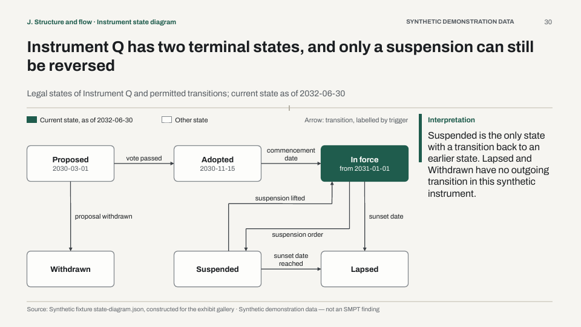
J1 · state-diagram · gallery slide 30
Instrument state diagram
Which legal or administrative states can this instrument occupy, which one is current, and which transitions are permitted?
Relationship Discrete states of one instrument linked by labelled, directed transitions; one state is current.
Question types state
Requires states, edges
Capacity 3–6 states
Units No quantities; the only date is the as-of date of the current state.
Editability tier native-shapes
Use, limits and editability
Use when The reader needs to know what can happen next to an instrument, not when it happened Transitions have a named trigger such as a vote, a date or an order Avoid when The order and dates of events are the point — use a timeline Quantities move between the states — use conversion-flow Editable State boxes, arrows and trigger labels as native shapes and text Fill and outline of each state Frame text Positioned, not data-bound States and transitions are drawn shapes; editing the fixture and re-running the build is the way to change structure Arrow geometry is computed and not connected to the boxes as PowerPoint connectors Limitations Up to six states in two rows; larger lifecycles need a table or a split into two exhibits Only transitions between adjacent rows or neighbours are routed; the layout order is chosen by the author The diagram shows permitted transitions, not how often or when they occur
Table alternative: A transition table (from state, to state, trigger).
Integrity rules: min-categories max-categories unique-labels edges-resolve current-state-resolves no-duplicate-edges
Design references: SMPT original repertoire examples (examples/05-visual-repertoire.svg)
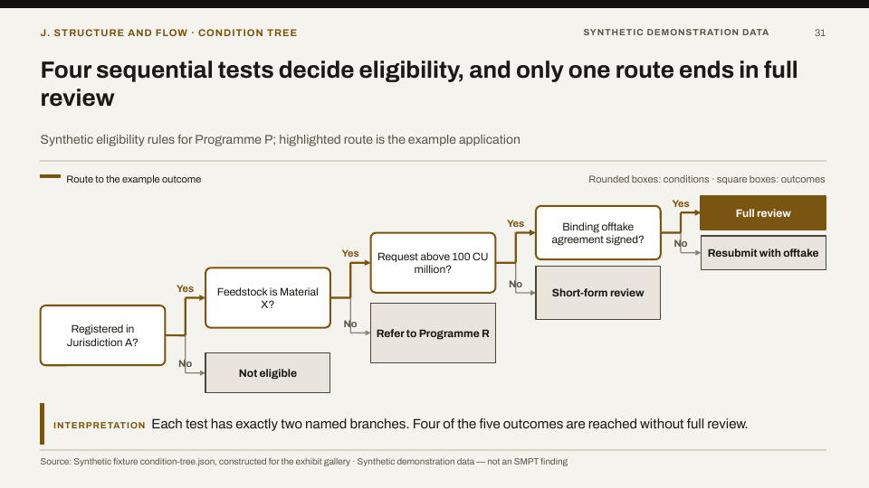
J2 · condition-tree · gallery slide 31
Condition tree
Which sequence of conditions leads to each outcome, and where does a given case end up?
Relationship Hierarchical decision structure: condition nodes with named branches terminating in outcomes.
Question types decision
Requires conditions, edges
Capacity 3–9 outcomes (depth at most 4)
Units No quantities; branch labels are answers such as Yes and No.
Editability tier native-shapes
Use, limits and editability
Use when Eligibility or applicability is decided by successive tests Each test has a small set of named answers and every answer ends in an outcome Avoid when Several criteria are weighed together rather than in sequence — use criterion-matrix Conditions can combine in any order — use a table of rules Editable Condition and outcome boxes, elbow lines and branch labels as native shapes and text Route highlight colour Frame text Positioned, not data-bound The tree is drawn shapes with computed positions, not a SmartArt or data-bound object Elbow lines are separate segments, not PowerPoint connectors Limitations Depth is capped at four tests and nine outcomes Branch labels must be short; long answers belong in the node text A node reached by two branches is not a tree and is rejected
Table alternative: A rules table (route, conditions met, outcome).
Integrity rules: unique-labels edges-resolve tree-structure min-categories max-categories branches-complete outcome-terminal max-depth highlight-resolves
Design references: SMPT original repertoire examples (examples/05-visual-repertoire.svg)
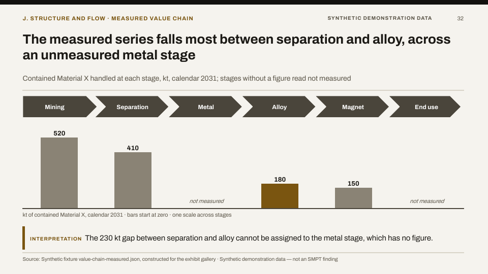
J3 · value-chain-measured · gallery slide 32
Measured value chain
Where along the value chain does a quantity exist in the evidence, and where is it not measured?
Relationship Ordered stages, each with at most one measured quantity on a shared zero-based scale and one unit.
Question types flow, sequence
Requires single-measure, status-stages
Capacity 4–8 stages
Units One unit across stages; bars start at zero on one scale. Differences between stages are not losses unless the source says so.
Editability tier native-shapes
Use, limits and editability
Use when The stage sequence is fixed and one quantity is reported at some stages Missing measurements are themselves part of the message Avoid when Stage quantities must reconcile as in, out and loss — use conversion-flow Stages are on different bases or units — use parallel-basis-panels Editable Chevrons, bars and value labels as native shapes and text Bar fill and highlight Frame text Positioned, not data-bound Bar heights are computed from the fixture and are not data-bound; editing a value means resizing the bar and its label No embedded workbook Limitations One quantity per stage; a second measure needs its own panel Adjacent stage values are not a conversion: definitions of the stages may differ Up to eight stages across the slide width
Table alternative: A stage table with the quantity, unit and a measured/not measured flag.
Integrity rules: min-categories max-categories unique-labels magnitude-nonnegative stages-ordered measured-minimum highlight-resolves
Design references: SMPT original repertoire examples (examples/05-visual-repertoire.svg)
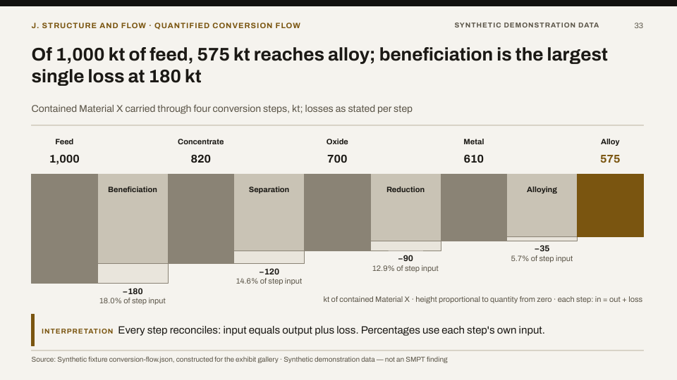
J4 · conversion-flow · gallery slide 33
Quantified conversion flow
How much of the input quantity survives each conversion step, and where is it lost?
Relationship Stepwise conversion on one unit: each step's input equals its output plus its loss; heights are proportional to quantity.
Question types flow, reconcile
Requires quantified-flows, additive-movements, single-measure
Capacity 2–5 conversion steps
Units One unit; rectangle height is proportional to quantity from zero. Loss percentages use the step's own input.
Editability tier native-shapes
Use, limits and editability
Use when Every step reports both its output and its loss on one unit The honest alternative to a Sankey when the flows are actually quantified Avoid when Losses or outputs are not reported — use value-chain-measured Flows branch to several destinations — use a table or sources-and-uses Editable Column rectangles, carried bands and loss stubs as native shapes and text Accent on the final output Frame text Positioned, not data-bound Heights are computed from the fixture and are not data-bound; editing a quantity means resizing the shapes and labels No embedded workbook Limitations Linear chain only; no branching or recycling Up to five steps across the slide width Small losses draw as thin stubs; the printed value carries the precision
Table alternative: A step table with input, output, loss and loss share.
Integrity rules: min-categories max-categories unique-labels magnitude-nonnegative bridge-reconciles
Design references: SMPT original repertoire examples (examples/05-visual-repertoire.svg)
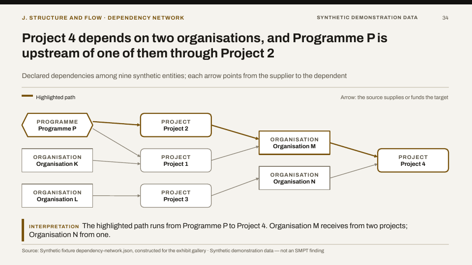
J5 · dependency-network · gallery slide 34
Dependency network
Which organisations, projects and programmes depend on which, and what is the path between two of them?
Relationship Directed acyclic network laid out in computed layers; edges are declared dependencies, one path is highlighted.
Question types relationship, flow
Requires edges
Capacity 4–12 nodes (at most 20 edges)
Units No quantities; edges carry no weight.
Editability tier native-shapes
Use, limits and editability
Use when Declared links between named entities explain an exposure or a chain of supply or funding One path carries the message Avoid when Link sizes matter — use conversion-flow or sources-and-uses The graph has cycles or hundreds of nodes — use a table of links Editable Node boxes, arrows and labels as native shapes and text Highlighted path colour Frame text Positioned, not data-bound Nodes and edges are drawn shapes at computed positions; arrows are not PowerPoint connectors and do not follow moved boxes Limitations Edges must join adjacent layers; add the intermediate node otherwise Layout is a deterministic heuristic and may not minimise crossings for dense graphs A drawn link is a declared dependency, not evidence of its size or importance
Table alternative: An edge list (source, target, relationship).
Integrity rules: min-categories max-categories unique-labels controlled-vocabulary edges-resolve no-duplicate-edges path-follows-edges no-cycles edges-adjacent-layers
Design references: SMPT original repertoire examples (examples/05-visual-repertoire.svg)
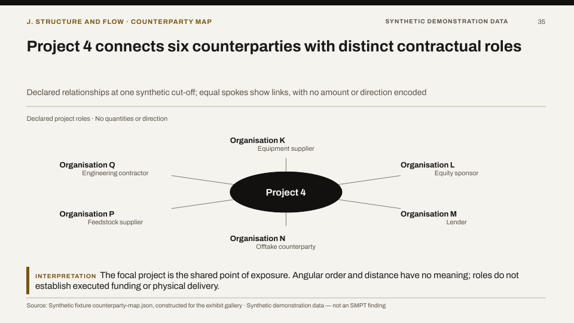
J6 · counterparty-map · gallery slide 35
Counterparty map
Which counterparties hold distinct roles around one focal project?
Relationship An unweighted ego network: equal spokes link named counterparties to a focal entity. Angular order and distance carry no measure.
Question types relationship
Requires edges
Capacity 4–8 counterparties around one hub
Units No quantities. Spokes have equal weight. Radius and angle have no analytical meaning.
Editability tier native-shapes
Use, limits and editability
Use when A single project is the common point of exposure across several contractual roles The question concerns counterparties and roles rather than sequences or quantities Avoid when Amounts, direction or links among counterparties matter Several hubs must be compared — use a role-matrix or edge list Editable Hub, unweighted spokes, counterparty names and roles Positioned, not data-bound Positioned shapes and lines; moving a label does not reconnect its spoke Limitations Relationships are asserted by the input; the diagram does not independently verify them No direction, flow, size, influence or hierarchy is encoded Radial order is only for layout and is not a ranking
Table alternative: An entity–role table with one row per counterparty.
Integrity rules: min-categories max-categories unique-labels label-length
Design references: SMPT original repertoire examples (examples/05-visual-repertoire.svg)
K. Lookup and decision
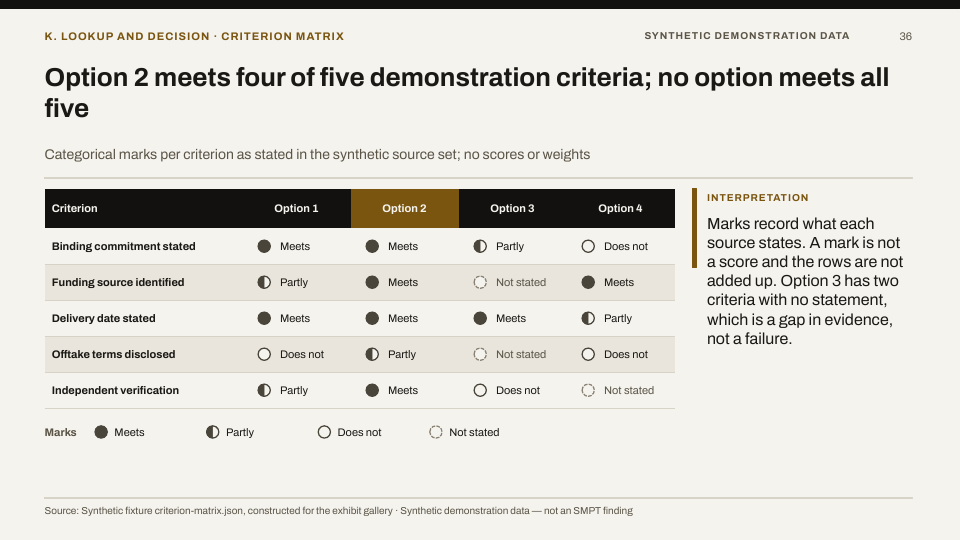
K1 · criterion-matrix · gallery slide 36
Criterion matrix
Which options meet which stated criteria, and where is the evidence silent?
Relationship Categorical assessment of each option against each criterion; no aggregation across criteria.
Question types lookup, decision
Requires criteria
Capacity 2–7 criteria rows (2 to 4 options)
Units No units: categorical marks only. Weights, scores and totals are rejected.
Editability tier table
Use, limits and editability
Use when Each cell can be graded Meets, Partly, Does not or Not stated from a cited source The reader needs to see evidential gaps next to failures Avoid when A weighted total or ranking is wanted — the tracker has no synthetic scores; use ranked-bar on a sourced measure Criteria are quantities on a shared unit — use a native table or bar chart Editable Native table: labels, marks, fills Frame text Positioned, not data-bound The circle glyphs (filled, half, hollow, dashed) are native shapes positioned over the mark cells from fixed row heights; changing a mark in the table does not move or redraw its glyph Limitations Four fixed marks; finer grading would imply a scale the sources do not support Marks assert nothing beyond the cited statement; they do not combine into an overall verdict
Table alternative: The native table itself, with the glyph column removed and marks as text.
Integrity rules: no-numeric-score min-categories max-categories unique-labels aligned-series cell-length accent-resolves
Design references: Strategy&, Every Molecule (2018), p14, Exhibit 6: option comparisons; SMPT original repertoire examples (examples/05-visual-repertoire.svg)
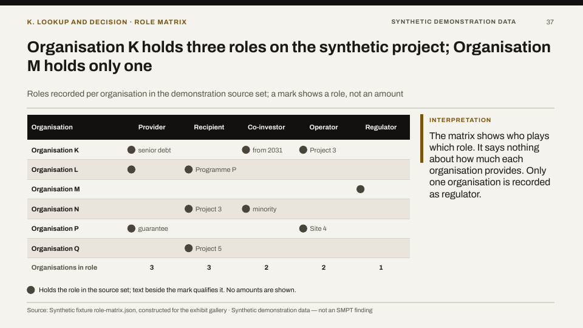
K2 · role-matrix · gallery slide 37
Role matrix
Which organisation plays which role, without implying how much money each provides?
Relationship Membership of organisations in roles; each mark is a recorded role, optionally qualified, never a quantity.
Question types lookup, state
Requires states
Capacity 3–8 organisation rows (2 to 5 roles)
Units No units. The count row totals organisations per role, never money.
Editability tier table
Use, limits and editability
Use when The reader needs to see roles and overlaps across organisations before any amounts Roles are sourced facts that can be stated in a few words Avoid when The question is how much each party provides — use sources-and-uses or a flow pattern on one stated basis Parties are linked by edges rather than shared roles — use a network or sankey pattern Editable Native table: labels, qualifiers, count row, fills Frame text Positioned, not data-bound The role circles are native shapes positioned over the cells from fixed row heights; the count row is typed table text, not a formula Limitations A mark records a role, not its size or duration Eight organisations is the legible limit on one slide
Table alternative: A two-column table of organisation and comma-separated roles.
Integrity rules: min-categories max-categories unique-labels aligned-series role-held cell-length no-amounts-in-roles
Design references: Strategy&, Every Molecule (2018), p13, Exhibit 5: value-chain network; SMPT original repertoire examples (examples/05-visual-repertoire.svg)
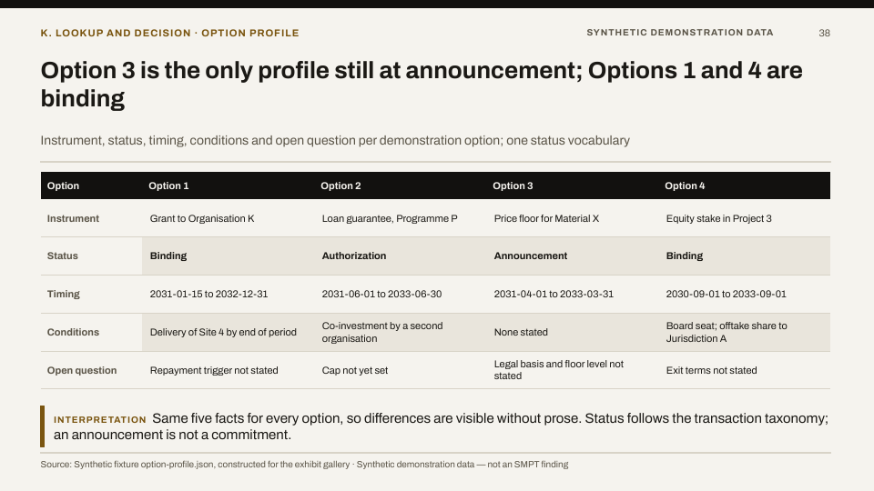
Relationship Side-by-side description of options on a fixed set of structured fields; no scoring.
Question types decision, lookup
Requires conditions
Capacity 2–4 option columns
Units No quantities. Dates are ISO and shown verbatim.
Editability tier table
Use, limits and editability
Use when A small set of options is compared on instrument, status, timing, conditions and open questions Every cell can be stated in under about 60 characters Avoid when Options need grading against criteria — use criterion-matrix Facts are long-form or differ by option — write a source dossier instead Editable Native table: every cell, fills, column widths Frame text Positioned, not data-bound None
Limitations Character limits keep every row on a fixed height Facts are as stated by the source; the table does not rank options
Table alternative: The pattern is itself the table; for four-plus options use a long-format table with one row per option.
Integrity rules: min-categories max-categories unique-labels controlled-vocabulary interval-ordered cell-length
Design references: Strategy&, Every Molecule (2018), p14, Exhibit 6: option comparisons; SMPT original repertoire examples (examples/05-visual-repertoire.svg)
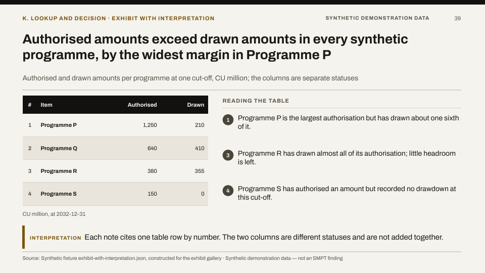
K4 · exhibit-with-interpretation · gallery slide 39
Exhibit with interpretation
What are the key figures, and which row supports each interpretive point?
Relationship A compact figures table paired with numbered notes; each note cites a table row.
Question types lookup, decision
Requires exact-values
Capacity 2–6 table rows (1 to 2 value columns, 2 to 4 notes)
Units One unit and one date basis for all rows; numbers right-aligned and formatted with the shared grammar.
Editability tier table
Use, limits and editability
Use when The reader needs exact figures and a short, evidenced reading of them on one slide Each interpretive point can be tied to a single row Avoid when The shape of the data matters more than exact values — use a chart family pattern The interpretation spans many rows or needs argument — use the frame interpretation panel or a separate slide Editable Native table: figures, labels, fills Interpretation notes as text boxes Frame text Positioned, not data-bound Note badges (numbered circles) are text shapes; they do not update if table rows are re-ordered Limitations Notes are limited to four and 130 characters each to stay beside the table Numbered references are typed, not linked
Table alternative: The table alone, with notes moved to the frame interpretation panel.
Integrity rules: min-categories max-categories unique-labels aligned-series reference-resolves cell-length
Design references: BCG and SIA (Nov 2022), PDF p16, Exhibit 6: zero-based labelled bars; SMPT original repertoire examples (examples/05-visual-repertoire.svg)
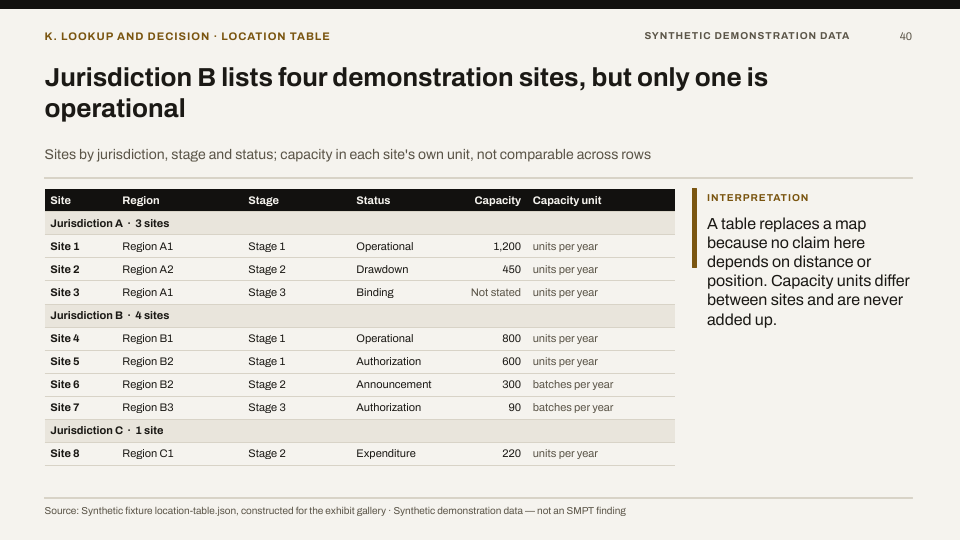
K5 · location-table · gallery slide 40
Location table
Which sites sit in which jurisdiction, at what stage and status, with what stated capacity?
Relationship Sites grouped by jurisdiction; stage, status and capacity are attributes, not positions.
Question types lookup, state
Requires locations, status-stages
Capacity 3–10 sites (up to 4 jurisdiction groups)
Units Each row carries its own capacity unit; no total is computed or shown.
Editability tier table
Use, limits and editability
Use when The reader needs to find a site and read its status, and no claim depends on geographic distance Capacity is stated per site in its own unit Avoid when The point is spatial clustering or proximity and the source supplies sound coordinates — commission a real map Capacity must be summed across units — it cannot be; use a single-unit chart Editable Native table: rows, group header rows, status text, fills Frame text Positioned, not data-bound None
Limitations No coordinates or distances Ten sites is the legible limit on one slide
Table alternative: The pattern is itself the table.
Integrity rules: min-categories max-categories unique-labels controlled-vocabulary sorted-order magnitude-nonnegative cell-length
Design references: SMPT original repertoire examples (examples/05-visual-repertoire.svg)